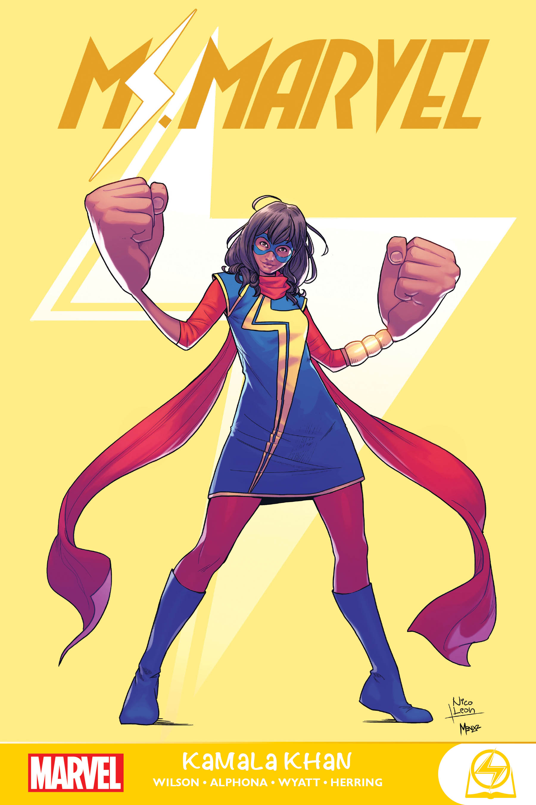

Kamala Khan, a.k.a. Ms. Marvel, is a teen superhero in the Marvel Universe. She is 16 year old Pakistani-American from Jersey City, and she goes to Coles Academic High School. Throughout the comics, Kamala must balance her teenage social and academic life and her duty to protect Jersey City. She is a big superhero nerd and worships the Avengers, especially Captain Marvel. Her name Ms. Marvel comes from the previous name of Captain Marvel. In 2022, the Ms. Marvel comics were turned into a Disney+ show. This website is an overview of the first Ms. Marvel comics.
